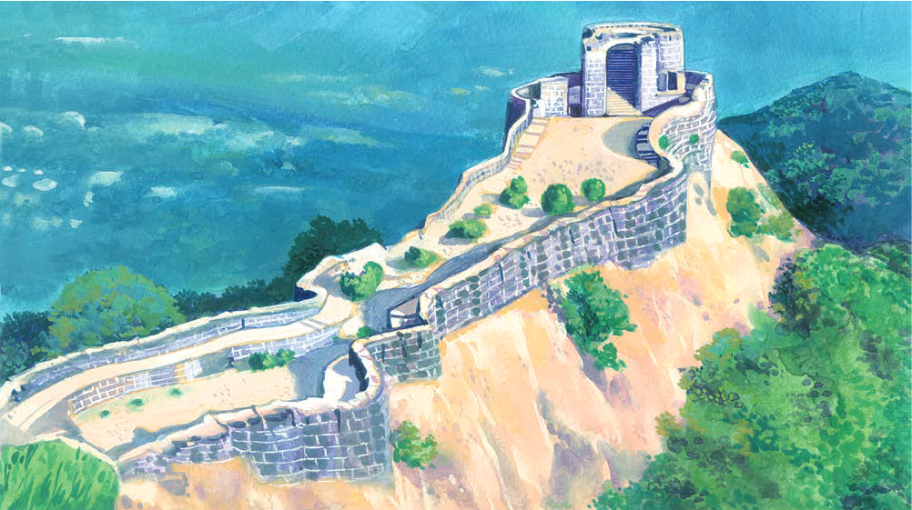
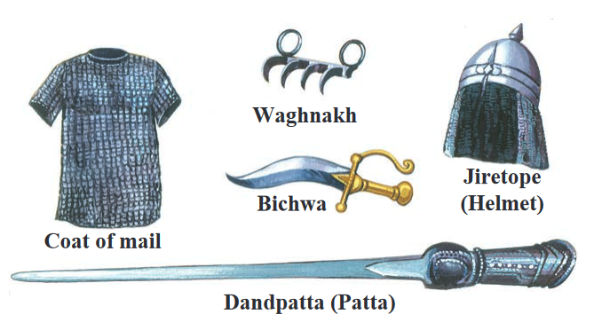
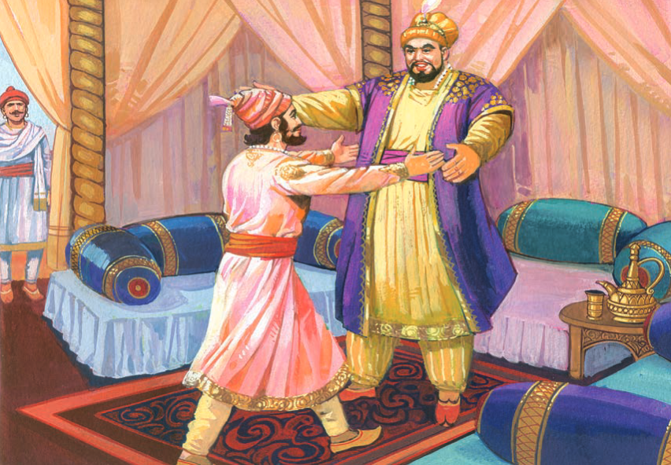

THE ENCOUNTER OF AFZAL KHAN

The Sultan summoned all his Sardars to court to take stock of the
situation. The one question before the assembly was “How to bring
Shivaji to book and break his revolt.” who is willing to march against
Shivaji and put an end to his rebellion. The court became silent.
Everybody sat quietly in his place and started looking at the next
person, for who would dare accept the challenge of fighting Shivaji ?
Just then a giant of a man came forward and bowed respectfully before
the throne. His name was Afzalkhan. The Khan accepted the challenge
and picked up the betel leaf from the salver as a mark of acceptance
Afzalkhan left Bijapur in great pomp. He was accompanied by a huge
army fully equipped for battle. At this time Shivaji was at Rajgad. He
got the news of Afzalkhan’s movements. He immediately saw that his
Swaraj was in great danger. Shivaji Maharaj shifted his headquarters
from Rajgad to Pratapgad. When the Khan learnt that Shivaji had moved
to Fort Pratapgad Pratapgad, he became very angry. He was aware of the
difficulties in conquering Pratapgad.

The Khan initiated many moves in the hope of bringing Shivaji down to
the plains. In a spirit of apparent friendliness he sent a message to
Shivaji. “You are like a son to me. Come and see me. Return our forts
and I shall see that Adilshah makes you a Sardar at his court.” Shivaji
quickly saw through the Khan’s offer. He was taking no chances. He
decided somehow to persuade the Khan to come up to the fort. This reply
of Shivaji pleased Afzalkhan. Passing his fingers through his beard he
smiled and said, “This is good news. He has no guts to fight me. I shall
myself go to Pratapgad and put an end to his life when we meet.” So he
agreed to Shivaji’s proposal. A date and time was fixed. It was agreed
that each one would be accompanied by a servant and followed by ten
bodyguards at a distance. When Shivaji reached the shamiana he saw that
the Khan had already arrived. He was busy planning his future moves. The
Khan got up and said, “Come, Shivaji Raje, let us embrace each other as
a mark of our friendship.”

Shivaji Maharaj cautiously took a step forward and the Khan took him
in his embrace. Compared to the giant Khan, Shivaji was short. He
reached only as far as the Khan’s chest. At the same moment, the Khan
held Shivaji’s neck in his iron grip and stabbed him on the side with
his dagger. It tore apart Shivaji’s robe but the coat of mail
underneath saved him. Shivaji, knowing that the Khan was trying to
kill him, quickly thrust the Waghnakh in the Khan’s stomach. Drawing
out the Bichwa with his right hand, he drove it into the Khan’s
stomach and tore apart his guts. The wounded Khan fell down. Shivaji
thus humbled the most powerful Sardar of the Bijapur Court. His fame
spread everywhere. The songs of his exploits were heard in the hills
and valleys of Sahyadri.